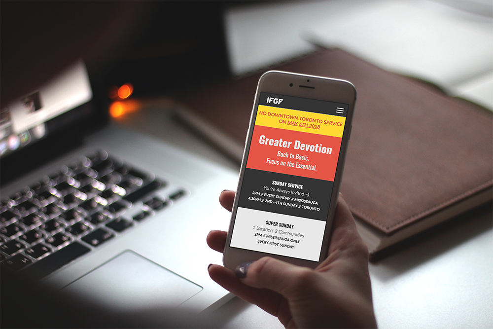
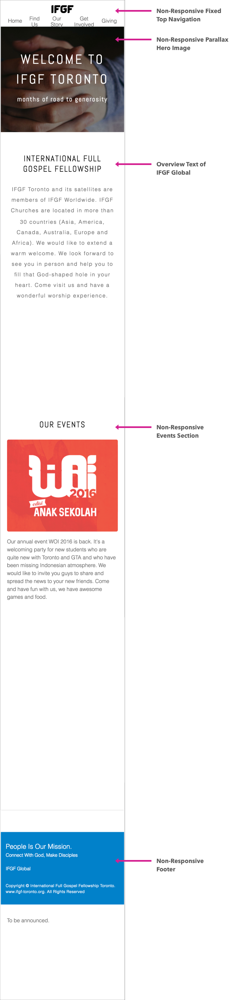
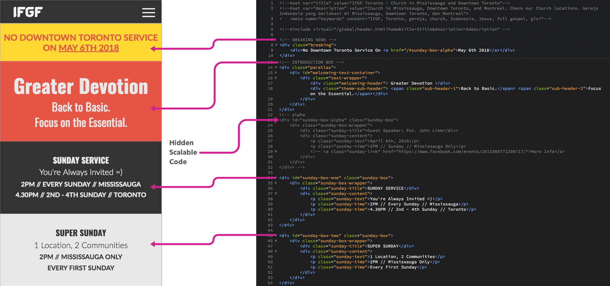

IFGF is a world wide non-profit christian organization with over 3000 local chapters. The Toronto chapter requires help to improve communication and connection with their congregation as they shift more towards a mobile culture.
View Live
The IFGF Toronto Website lets members:
• Seamless sunday service information
• Alert any unanticipated events
• Prepare first-timers before their visit
My Role:
UX Front-End Web Developer
• Ongoing collaboration with a Senior Developer for Rapid Front-End Prototyping and Development
• Information Architecture - Structure the overall Web Responsive App
• Provide a systemic point of view of the whole design process
To identify, investigate, and validate the real problem caused by the changing digital culture, a 1-week quantitative and qualitative research was concluded. There are 3 main focus point of the investigation:
Mobile Browser on a smartphone is the main digital access touchpoint for 62% of Canadians
2. Social Media
Social Media is rapidly becoming the main source of News coverage
3. Mobile-Based Decision Making
Mobile Technological Evolution in the last 10 years has simplified personal decision making
2 Pain Points were discovered when we mapped out a typical journey of our target audience. We digged deeper into them to find intervention opportunities.
Impact of Mobile-Culture:
• High 'Mobile-First' Expectation
• Cognitive overload caused by rapid information flow
• Reconstruction of personal priorities
With a main campus in Mississauga and a satellite campus in downtown Toronto, schedules tend to be inconsistent. Unanticipated guest speaker often means unplanned combine service in Mississauga. While IFGF Toronto do have a monthly combine service every first sunday of the month, it is not fixed. This means, missing a couple of services also means missing any information about IFGF Toronto. Regular members had to go through another experience of being a new member. These circumstances produce a harsh feeling of exclusivity, where instead of feeling welcomed and belonged, people feel disconnected and overwhelmed.
HOW MIGHT WE
Create a Digital Bridge in order to Increase Engagement between the organization and its community?
As a global organization, IFGF Global provides annual themes for its worldwide local chapter to follow. This heavy Top-Down corporate culture keeps the brand consistent, but also limits assimilation of its individual local chapter with its local culture. The local chapter in Toronto ended up becoming an 'Island' community, unable to become the salt of its local community.
Our team believe that formal cultural challenges such as this, could be alleviated with the right digital strategy.
The short timeline meant that we had to prioritize and strategize the content, such that it would follow the brand guidelines, while also be relatable to the Toronto's chapter local community. So, we chose to prioritize on the index.html page for the first deadline submission.
To reduce development time, we chose to repurpose the code structure of the existing website as much as possible. So we did a precedence study of its design and code structure.
View Existing Live

The Precedence study shows that the existing IFGF Toronto website is designed to be non-responsive. This prevents any engagement with its changing mobile-first community. Beside the obvious non-responsive design, we also noticed that the content is placed to focus inward and cause new comers to feel the obvious exclusivity.
We stripped everything into its barebone task flow to prompt content strategy ideations. This prevents us from jumping straight into 'How' and 'What', and instead allows us to first focus on the 'Who' and 'Why'.

{kind=link}
{kind=link}
We proposed to focus on the core reason for people when accessing IFGF's website: To get information about the local Toronto chapter, its location, its hours, and any public events that are coming up. Anything besides that are secondary in nature.
Based on information sorting, we proposed to structure the website:
1. Public Events Announcement
2. Main Social Media Link
3. Local Chapter Culture for Newcomers
4. Locations
5. What Next Link
Talking to our client, we know that they expect to have the most events between November-April annually and they expect to have guest speakers visiting with no exact dates. So, we needed a product that is scalable in its design and code, so that it is adjustable to IFGF Toronto's recurring annual events and any unexpected changes.

{kind=link}
This fact supports the previous information sorting hypothesis that the Public Events Announcement section should be at the top of the page because it will change every month, and simplifies information access to both current members and newcomers.
Working in with a real life client and a developer requires intricate negotiation skill. I found that because I was trained to think and design systematically, teamwork becomes easier. During negotiation, I positioned myself as someone who is bringing forward a system and a problem to solve instead of pixels to push around.
Because the organization has a strong collective culture, I found that most of the communication happens non-verbally. Navigating an exclusive community is always going to be challenging. I learned that empathy is the key during that circumstances. I focused on identifying. investigating, and validating the qualitative needs and frustrations of individual members, instead of taking everything at face value.
The team found that repurposing the parallax code sometimes cause inconsistencies during quality testing. We are currently planning to migrate everything to a solid well-documented Front-End framework.
Due to the short timeline, we were not able to fully develop the whole website. We will be moving our current design to the latest version of Bootstrap before we continue the design.
With other visual assets, coordination across all platform and media will be important in creating brand experience consistency. This will require further communication with other key stakeholders, such as graphic designer. After the website is fully developed and deployed, we will start communication to create a multi platform visual system.